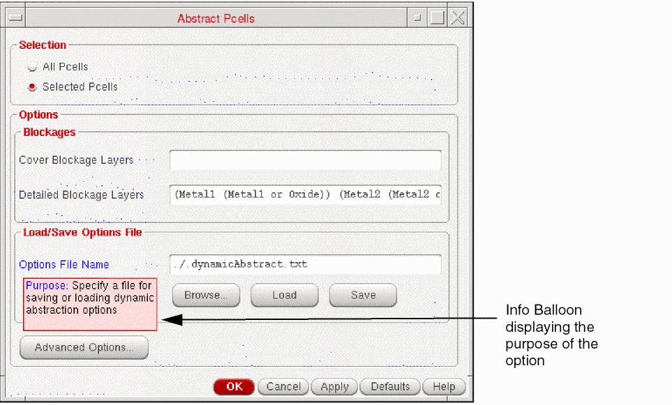
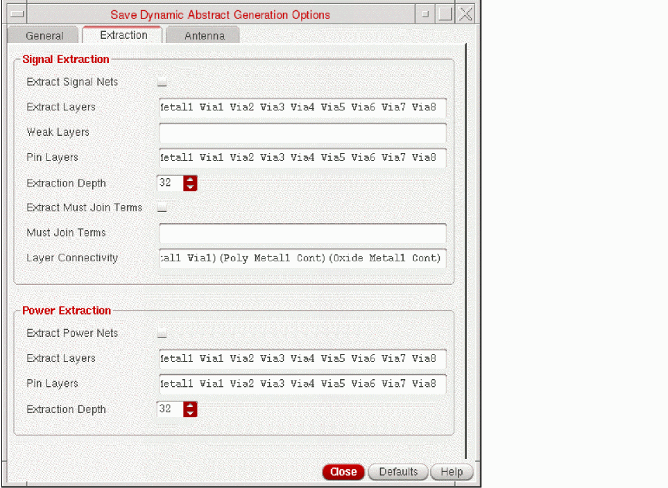
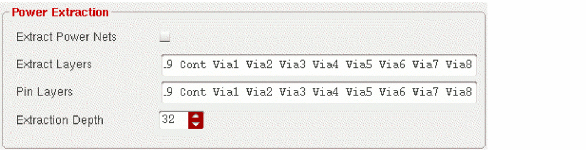

Specifying Extraction Options for Dynamic Abstraction
You can specify the extraction information for signal and power nets in the Extraction tab of the Save Dynamic Abstract Generation Options form.
To use the settings in the Extraction tab of the Save Dynamic Abstract Generation Options form:
-
Choose Tools – Dynamic Abstract Generation For Pcells – Abstract Pcells.
The Abstract Pcells form is displayed as shown in the figure below.
 -
Click Advanced Options.
The Save Dynamic Abstract Generation options form is displayed as shown in the following figure. The form has three tabs: General, Extraction, and Antenna tab.
 -
In the Signal Extraction section, you can specify the following options for extracting signal nets.
- Select Extract Signal Nets to run connectivity extraction on signal nets. By default, the Extract Signal Net check box is deselected.
- Use Extract Layers to specify the layers or layer purpose pairs on which signal net extraction is to be performed.
- Use Weak Layers field to specify the layers that you want to be considered as weak layers. The weakly connected pins will be created for the layers specified in the Weak Layers field. By default, the Weak Layers field is empty.
- Use Pin Layers field to specify the layers on which you want the pins to be created. This can be a subset of layers that are specified in the Extract Layers field.
- Select Extraction Depth field to specify how many levels down the instance hierarchy the Dynamic Abstract Generation process must search for the shapes to be extracted.
- Select Extract Must Join Terms to establish a must-join relationship between all disjoint groups of geometries extracted from separate pins on the same net.
- Select Must Join Term to specify a list of terminal names, each separated by a space.
- Select Layer connectivity to specify the connectivity between layers. This enables you to specify the layer connectivity without having to add via definitions in the technology file.
-
In the Power Extraction section, you can specify the following options for extracting power nets.
- Select Extract Power Nets to run connectivity extraction for power nets. If this check box is selected, all the pin shapes created during the Pins step are extracted. By default, the Extract Power Nets check box is deselected.
- Use Extract Layers to specify the layers or layer purpose pairs through which you want the power nets to be extracted.
- Use Pin Layers to specify the layers on which you want the pins to be created. Creating pins on a layer helps to determine the shapes found by the extractor that are converted into pins.
-
Select Extraction Depth to specify how many levels down the instance hierarchy the Dynamic Abstract Generation process must search for the shapes to be extracted. The default value is
32, which is the maximum number of levels in a design hierarchy stored in the database.
- Click Close after setting the required fields.
Related Topics
Save Dynamic Abstract Generation Options Form
Return to top